Pokédex / #035
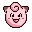
Clefairy #035
Fairy
Its adorable appearance makes it popular as a pet. However, it is rare and difficult to find.
Generation 1 · Kanto
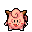
Stats
| Attack | 45 | |
|---|---|---|
| Defense | 48 | |
| Sp. Atk | 60 | |
| Sp. Def | 65 |
In the wild
| Wild level | 10–20 |
|---|---|
| HP | 70 |
| Experience | 7 |
| Egg groups | Fairy |
Evolution
Moves
| Level | Move | Type | Category | Power | Energy | Cooldown | Effect | |
|---|---|---|---|---|---|---|---|---|
| 1 | Tackle | Normal | Physical | 15 | 15 | 1s | Tackle is one of the most common and basic moves a Pokemon learns. It deals damage with no additional effects. | |
| 1 | 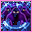 | Disarming Voice | Fairy | Special | 40 | 50 | 12s | Letting out a charming cry, the user does emotional damage to opposing Pokemon. This attack never misses. |
| 1 | Charm | Fairy | Status | – | 50 | 60s | Charm lowers the Attack stat of the target by two stages. | |
| 1 | Pound | Normal | Physical | 40 | 40 | 6s | Pound inflicts damage and has no secondary effect. | |
| 1 | Growl | Normal | Status | – | 60 | 60s | The user growls in a cute way, making the foe lower its ATTACK. stat. | |
| 1 | Encore | Normal | Status | – | 100 | 60s | The user compels the target to keep using the move it encored for three turns. | |
| 7 | Sing | Normal | Status | – | 100 | 120s | Sing puts the target to sleep. | |
| 10 | 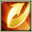 | Double Slap | Normal | Physical | 15 | 30 | 5s | Double Slap inflicts damage and hits between 2-5 times per use. |
| 10 | 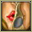 | Sweet Kiss | Fairy | Status | – | 60 | 20s | Sweet Kiss causes the target to become confused. |
| 13 | Defense Curl | Normal | Status | – | 60 | 60s | Defense Curl raises the user's Defense by two stages. | |
| 13 | 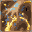 | Copycat | Normal | Status | – | 100 | 30s | The user mimics the move used immediately before it. The move fails if no other move has been used yet. |
| 16 | Magical Leaf | Grass | Special | 60 | 60 | 9s | Magical Leaf deals damage and ignores changes to the Accuracy and Evasion stats. | |
| 22 | 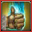 | Wake-Up Slap | Fighting | Physical | 70 | 75 | 9s | Wake-Up Slap deals damage and will have double the power when the target is sleeping. It will also wake the target up. |
| 28 | Stored Power | Psychic | Special | 20 | 80 | 18s | Stored Power deals variable damage depending on the stat modifications of the user. When the user has no stat modifications, Stored Power's base power is 20. Its power increases by 20 for each stat boost the user has. | |
| 31 | 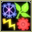 | Metronome | Normal | Status | – | 80 | 20s | User performs any move in the game at random. |
| 34 | 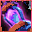 | Cosmic Power | Psychic | Status | – | 100 | 60s | Cosmic Power boosts the Defense and Special Defense of the user by one stage each. |
| 40 | Body Slam | Normal | Physical | 85 | 85 | 13s | Body Slam deals damage and has a 30% chance of paralyzing the target. | |
| 43 | Moonlight | Fairy | Status | – | 120 | 120s | Moonlight restores the user's current HP based on the weather conditions and time of day. Normal conditions will restore ½ of the total HP. | |
| 46 | 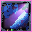 | Moonblast | Fairy | Special | 95 | 95 | 17s | Borrowing the power of the moon, the user attacks the target. This may also lower the target's Sp. Atk stat. |
| 50 | 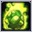 | Meteor Mash | Steel | Physical | 90 | 100 | 23s | Meteor Mash deals damage and has a 20% chance of raising the user's Attack by one stage. |
| 55 | Healing Wish | Psychic | Status | 250 | 150 | 90s | The user become with 1 HP and all party members recover full HP. |
Field abilities
DigStrengthFlashRock SmashHeadbutt
Special abilities
Cute CharmMagic Guard
Egg moves
AmnesiaAromatherapyBelly DrumCovetFake TearsHeal PulseMetronomeMimicMisty TerrainPresentSplashStored PowerTickleWish
Technical machines
BideBlizzardBody SlamBrick BreakBubblebeamCalm MindCounterDefense CurlDouble EdgeDouble TeamDrain PunchDream EaterDynamic PunchFire BlastFire PunchFlamethrowerFocus PunchHeadbuttIce BeamIce PunchIron TailLight ScreenMega KickMega PunchMetronomeMimicMud SlapNightmarePsychicPsywaveRageRain DanceReflectRestSafeguardSeismic TossShadow BallShock WaveSkull BashSolar BeamSubmissionSubstituteTake DownThunderThunder PunchThunder WaveThunderboltToxicTri AttackWater GunWater PulseZap Cannon
Drops
| Item | Amount | Chance | |
|---|---|---|---|
| comb | 1 | 18.2% | |
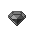 | black diamond | 1 | 6.67% |
| white orb | 1 | 6.25% | |
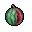 | melon | 1 | 5% |
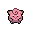 | clefairy doll | 1 | 0.1% |
| Pixie Plate | 1 | 0.002% | |
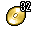 | TM 32 | 1 | 0.001% |
| clefablite | 1 | 0.0004% |
Other forms
Christmas Clefairy